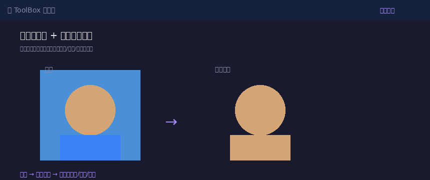
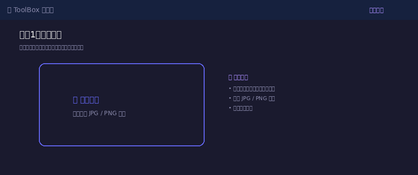
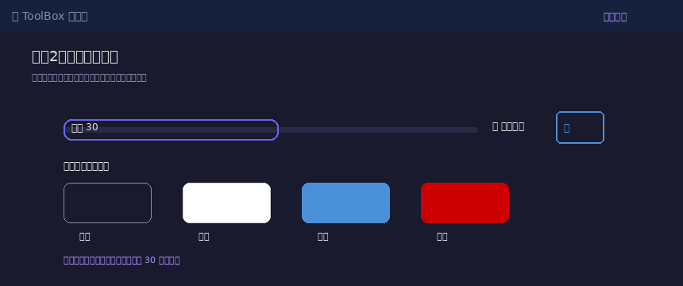
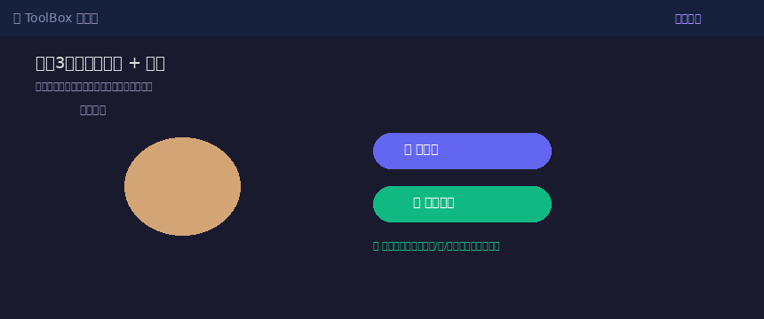

需要一张蓝底证件照，手边只有白底的？产品图片背景太杂乱想抠出来？求职简历要红底照片，翻遍相册找不到？
在线图片去背景 就是为这些场景准备的。不需要 Photoshop，不需要装任何软件，在浏览器里打开就能用。上传照片 → 调整容差 → 选底色，3 步完成抠图换底，支持透明、白、蓝、红、黑五种背景色，还支持自定义颜色。
全程免费、无需注册、图片不会上传到任何服务器——隐私安全有保障。

进入 ToolBox 首页，点击「图片处理」分类，找到「图片去背景 + 证件照换底色」工具卡片。点击「📁 选择图片」按钮，从电脑中选择要处理的图片（支持 JPG、PNG 格式）。
上传成功后，页面会显示图片信息，画布区域会自动出现原图预览。选择时建议用纯色背景的照片（证件照白底/蓝底、产品图纯色背景），这样抠图效果最好。

上传图片后，工具提供了两个关键参数：
容差控制背景移除的敏感度。数值越大，移除的颜色范围越广；数值越小，越精准但也容易残留边缘。默认值 30 适合大多数纯色背景，如果背景颜色不均匀，可以适当调大到 40-60。
| 选项 | 效果 | 适用场景 |
|---|---|---|
| 透明 | 保留透明背景 | 电商图、设计素材、贴纸 |
| 白色 | 白底证件照 | 身份证、护照、简历（默认） |
| 蓝色 | 蓝底证件照 | 毕业证、工作证、考试报名 |
| 红色 | 红底证件照 | 结婚证、部分证件 |
| 黑色 | 黑底照片 | 艺术照、特殊要求 |
| 自定义 | 任意颜色 | 品牌色背景、个性化需求 |

参数调好后，点击「🎭 去背景」按钮，工具会立即处理图片。左侧显示原图，右侧显示处理结果，背景移除效果一目了然。
如果结果满意，点击「📥 下载」按钮，图片会自动保存到你的电脑。下载的是透明背景的 PNG 图片（若选择了颜色则是带底色的图片），可直接用于证件照、电商图、设计素材等场景。

Q：复杂背景（风景、人群）能抠干净吗？
本工具基于颜色阈值算法，适合纯色或接近纯色的背景（证件照白底/蓝底、产品纯色背景）。复杂背景建议先用其他工具简单处理，或选择边缘更清晰的主体照片。
Q：图片会上传到服务器吗？隐私安全吗？
完全不会。所有处理都在你的浏览器本地完成，图片不会上传到任何服务器，隐私绝对安全。
Q：证件照换底色后清晰度会下降吗？
不会。工具保持原图分辨率输出，换底色不影响人物清晰度。建议原图越清晰越好，一般手机拍摄的照片足够使用。
📌 需要证件照换底色？现在就去试试在线去背景工具
🎭 去制作证件照 →